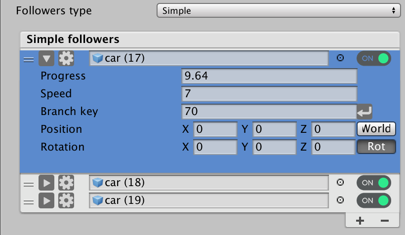
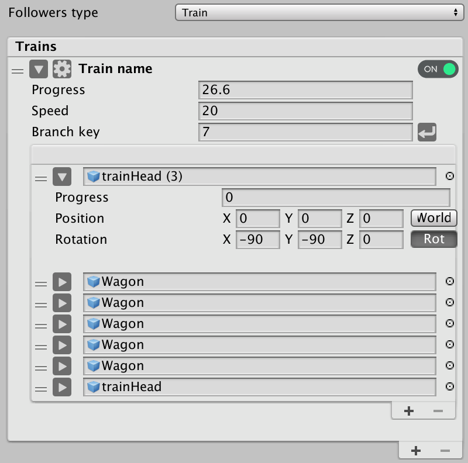
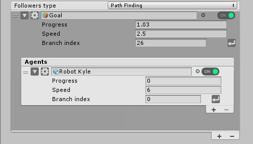
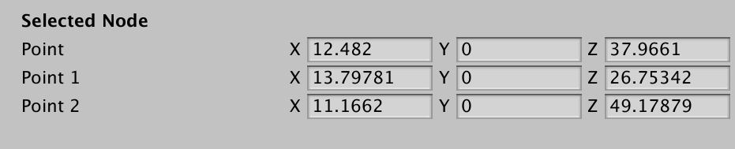
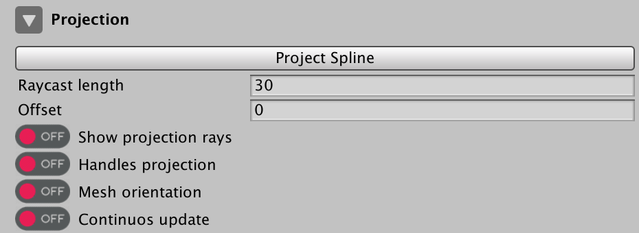
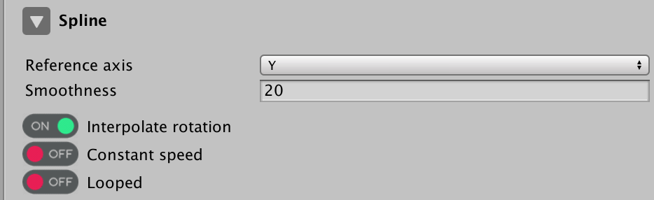
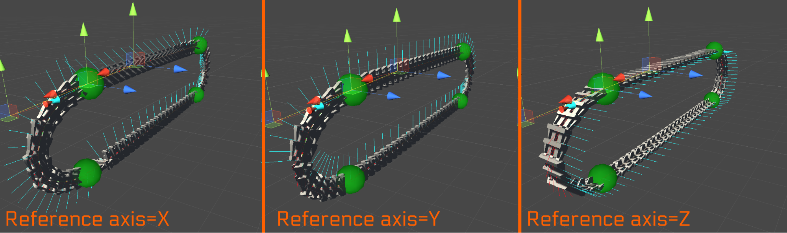
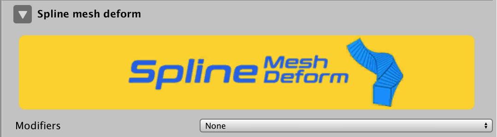

Inspector

File Menu
| Variables | Description |
|---|---|
| Open | Open a ".SP" file |
| Save | Save spline data in a ".SP" file |
| Append | Append a ".SP" file with the current spline data, this can be used as an "Attach" action which can help quickly build splines with repeated patterns |
| Documentation | Open documentation website |
Followers
| Variables | Description |
|---|---|
| Followers type | this is where you get to select which type of follower settings you want to display in your inspector, currently there are 3 follower types supported. Simple: this is the basic follower type.Train: as you can tell from its name, follower with animation behaviour similar to trains.Path finding: Only available if you have Spline Path Finding package in your project, this is used to create path finding animation behaviour. |
Simple

| Variables | Description |
|---|---|
 Follower Settings Follower Settings |
This opens the follower settings window ,You will find detailed explanation below. |
| Follower game object slot | The game object that you want to use as follower, it could be a character, a particle system, camera, any kind of gameObjects. |
| On/Off switch | Used to enable disable follower animation. |
| Progress | Progress is the current distance of the follower on the branch, the max is the length of the branch. |
| Speed | The speed of the follower. |
| Branch key | Current follower branch, this can be changed to move the follower to another branch To add a branch key, select the branch from your scene view then click on , the key will be automatically added to the text field . |
| Position | Translation of the follower with a button to switch between World and local space. |
| Rotation | Rotation of the follower, with a button to turn Rotation On/Off in case it is needed. |
Trains

PathFinding

Selected Node
This section is used to control the node position and its handles manually from the editor, this can be useful in case you’re seeking precision in positioning your nodes,


Projection
Project the spline into 3D mesh, for this to work, the meshes where the spline plus object is being projected into needs to have a 3D collider on.

| Variables | Description |
|---|---|
| Project Spline | Project the spline into your environment meshes . |
| Raycast length | The length of the projection raycast. |
| Offset | The local translation offset applied to the spline on the Y axis in case offsetting spline is required. |
| Show projection rays | Used to display the rays in your scene view. |
| Handles projection | Enables the handles projection as well, this will increases projection precision. |
| Mesh orientation | Override the spline normals with the projection mesh normals. |
Spline

| Variables | Description |
|---|---|
| Reference axis | The spline normals default direction, this is used to change the reference normal direction of the spline, it is very useful when changing the scene view mode for an example.  |
| Smoothness | This changes the number of vertices between two nodes, it controls the smoothness of your spline curve. |
| Attach | Attach a copy of another Spline plus Object, this can be used to speed paths drawing when having similar path patterns. |
| Interpolate rotation | this creates a rotation lerp between vertices when set to On, which will gives a very smooth rotation when path following. |
| Constant speed | Enable/disable speed variation on nodes, it is better to set it to “Off” for performance sake if you are not using speed variation on nodes. |
| Looped | Used to close the spline shape in case you have a spline with one branch. |
Spline Mesh Deform
Warning
You will get this only if you have Spline Mesh deform package installed in your project .
Spline mesh deform is a procedural mesh generation modifiers collection for "Spline plus".
it has 4 modifiers:
- Mesh deform: A procedural mesh generation tool on all Spline plus branches for custom meshes
- Extrude shape: Extrude Spline plus branches and transform them into a procedural mesh
- Tube mesh: Convert Spline plus branches into tube meshes,
- Plane mesh: Convert Spline plus branches into plane meshes, similar to Unity ' line renderer '
